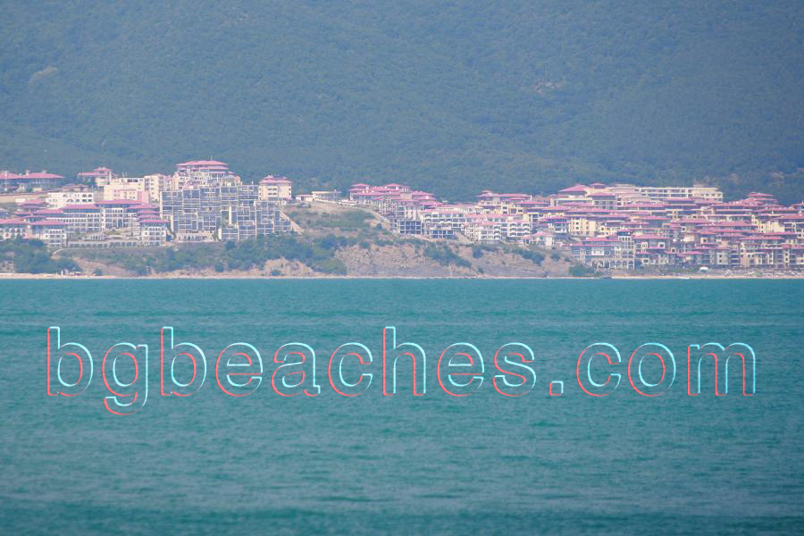

Small Beach - Sveti Vlas
About This Photo
This photograph captures the sandy beach and coastal conditions at Sveti Vlas on the Bulgarian Black Sea coast. The image provides authentic visual documentation to help potential visitors understand what to expect. These photos were taken as part of a comprehensive 2007 documentation project of Bulgarian beaches, aiming to present realistic, honest representations rather than overly-processed marketing imagery.
Understanding What You See
The beach area shown in this image represents typical conditions at Sveti Vlas. When planning a beach vacation in Bulgaria, visual information like this helps travelers make informed decisions about which destinations match their preferences. The Bulgarian Black Sea coast stretches 378 kilometers and offers tremendous diversity - from wild natural beaches to fully-developed resorts - making it important to understand the character of each location.
About Sveti Vlas
Sveti Vlas is one of many distinctive destinations along Bulgaria's Black Sea coastline. Each location offers unique characteristics in terms of beach quality, water conditions, facilities, crowd levels, and overall atmosphere. Bulgaria's coastal tourism provides excellent value compared to Western European beach destinations, with summer temperatures reaching 28-32°C (air) and water temperatures of 22-25°C during peak season.
Visiting Information
Best Time to Visit: June-September for swimming, with July-August being busiest and most expensive.
Accommodation: Ranges from budget guesthouses (40-60 BGN/night) to mid-range hotels (80-150 BGN/night).
Beach Costs: Beach access is free; sunbed/umbrella rentals typically 10-20 BGN/day.
Food: Beach bar meals 10-20 BGN; local restaurants 15-30 BGN for main courses.
Currency: Bulgarian Lev (BGN), approximately 2 BGN = 1 EUR.
Language: Bulgarian official; English, German, Russian spoken in tourist areas.
What Makes Bulgarian Beaches Special
The Bulgarian Black Sea coast combines several key advantages: warm summer waters perfect for swimming, generally fine sandy beaches, relatively uncrowded conditions (outside major resorts), excellent value for money, diverse options from wild nature to developed infrastructure, rich cultural history, and welcoming local hospitality. Whether seeking party atmosphere or peaceful retreat, modern resorts or traditional villages, this coastline delivers authentic experiences at affordable prices.
Planning Your Visit
When planning a trip to the Bulgarian Black Sea coast, consider your priorities: Do you want vibrant nightlife or peaceful relaxation? Family facilities or romantic settings? Budget accommodations or luxury hotels? Natural beaches or resort amenities? Browse through photo galleries of different locations to compare options and find your ideal destination. Many travelers visit multiple beaches during one trip to experience the coast's diversity.
Practical Tips
Bring SPF 30+ sunscreen - the Black Sea sun is strong. Many establishments prefer cash over cards. Learn basic Bulgarian phrases - locals appreciate the effort. Book accommodations well in advance for July-August. Consider visiting in June or September for better weather-to-crowd ratios. Try local restaurants for authentic cuisine and fresh Black Sea fish. Tap water is generally safe but bottled water is inexpensive. Beach gear rentals are available but bringing your own saves money.